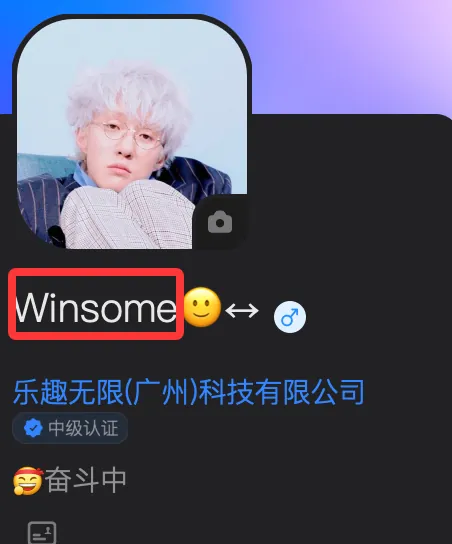

轻量、清晰、好用。
让每个运营工具都拥有同一种使用体验。以现有 Fun Toolkit 为基础，统一视觉尺度、控件行为与完整状态，方便团队扩展新的工具。
一个工具，一条主线
上传 → 预览 / 调整 → 生成 → 下载。每个区域只有一个最突出的主操作。
状态可见，反馈明确
可操作、处理中、已完成、失败都能被识别。用文字与图标共同表达，不依赖颜色。
桌面紧凑，手机好点
保留工作台密度；手机提供至少 44 × 44 px 的操作区域，避免横向滚动。
品牌与颜色
把品牌展示与功能语义分开管理。网站名统一为 Fun Toolkit，字标保持横排、单行，标识与文字之间不加竖线。
既有差异按后续版本逐步收敛
品牌标识
使用提供的原始 WebP 标识，不拉伸、不变色、不额外描边。
 Fun Toolkit
Fun Toolkit- 页头标识 30 × 30 px，字标 16 / 20 px，750 字重，间距 8 px。
- 四周至少留 8 px 净空；图形与文字同比例缩放。
- 小尺寸只用图形时，仍需可访问名称。品牌链接回首页。
- 品牌插画可用蓝黄组合；黄色用于装饰，不作浅色底上的正文色。
主交互与品牌色
#0071E3主按钮 / 链接 / 焦点#136BFFLogo / 插画 / 品牌展示#0B45D9品牌图形层次#FFC928小面积点缀 / 插画#EAF3FF · #CFE5FF次按钮 / 上传区 / 边线现有工具主色为 #0071E3，首页部分交互使用品牌蓝 #136BFF。新增统一组件使用交互蓝，品牌展示保留品牌蓝。本目录按此推荐值呈现，不将两种颜色混写为同一令牌。
中性色与语义色
| 角色 / 推荐令牌 | 前景 | 背景 / 边框 | 使用规则 |
|---|---|---|---|
标题 / text.heading | #202A3B | — | 工具标题、分区标题、关键数值。 |
正文 / text.body | #1D1D1F | — | 主要说明与输入内容；品牌字标使用 #111111。 |
次级文字 / text.secondary | #626C7C | — | 导航未选中、较重要辅助信息；弱化辅助用 #6E7785。 |
表面 / surface.* | — | #F5F5F7 / #FFFFFF | 页面浅灰、工作台与弹窗白色。 |
边界 / border.* | — | #E8E8ED / #8B95A5 | 弱分隔 / 新表单可识别描边；不把卡片线当输入边框。 |
替换操作 / action.replace | #21834B | 文字白色 | 仅“替换文件”等肯定动作。hover #196B3C，pressed #155C34。 |
成功 / status.success | #237957 | #EDF8F3 | 完成确认、已保存、生成成功；配对勾与结果文字。 |
信息 / status.info | #175DA5 | #EAF3FF | 过程说明、非阻断提示；配信息图标。 |
警告 / status.warning | #8A4B00 | #FFF7E8 | 低清素材、可能影响质量但仍可继续的情况。 |
错误 / status.error | #B42318 | #FFF1F0 | 新增统一错误色。字段失败、处理失败；配原因及修复动作。 |
禁用 / state.disabled | #647083 | #EDF0F4 | 不响应、不添加 hover 阴影；旁边说明解锁条件。 |
普通文字对比度目标 ≥ 4.5:1；大字 ≥ 3:1；有意义的控件边界与焦点 ≥ 3:1。任何色值更换都需在实际背景上复核，不靠降低整组透明度表现不可用状态。
字体与基础尺度
沿用系统字体，中文使用苹方；不加载额外网络字体。正文清楚，标题克制，避免每一行都加粗。
手机 34 / 41
手机 22 / 28
手机 15 / 22
字号单位为 px，前值为字号、后值为行高。首页大标题保留独立展示层级，示例按容器空间适度缩小；不直接套用于工具工作台。手机输入内容至少 16 px，避免 iOS 自动放大。主导航 16 px，未选中 400，选中 700；语言和联系作者 14 px 常规字重。
间距：4 px 为基准
优先使用下列序列，不按每个页面单独调一套。
4 px8 px12 px16 px24 px32 px48 px64 px图标与文字 8；字段标签到输入 6–8；字段之间 16；卡片之间 16；工作台内边距新组件统一 24 / 手机 16。
圆角与层次
大容器柔和，小控件紧凑。
紧凑按钮
输入 / 提示
主按钮 / 内卡
工具外卡
- 工具外卡：桌面 22，手机 18；弹窗统一 20。
- 大卡浅影：
0 4px 18px rgba(0,0,0,.035)。 - 弹窗深影：
0 24px 70px rgba(0,0,0,.25)。 - 普通输入、次按钮不依赖浮起阴影。胶囊形仅用于语言切换、小状态标签等既有语义。
- 图标统一 20 × 20，线宽 1.8–2；辅助图标 16，上传图标 30–36。
页面与导航
页头、工具标题和双栏工作台保持稳定。以下是缩略布局示例；主导航和语言按钮可点击体验选中状态。
居中短下划线 20 × 2 px
Fun Toolkit
联系作者房间背景工具
合成预览
输出文件
| 区域 | 桌面 | 手机 / 窄屏 |
|---|---|---|
| 页面容器 | 最大 1440 px（包含左右各 42 px 内边距）；实际内容最大 1356 px。 | ≤ 900：左右 24 px；≤ 540：左右 16 px。支持宽度至少 320 px。 |
| 页头 | 最小 64 px；Logo、导航、语言与作者单行布局。 | ≤ 540：两行；第一行品牌与操作，第二行三个导航均分；高度约 109 px。 |
| 工作台 | 左侧 7fr / 右侧 3fr；右栏至少 300 px；间距 16 px。 | ≤ 900：单列，先工作区后输出；≤ 540 间距 14–16 px。 |
| 标题区 | 距页头 32 px；标题左对齐；帮助按钮在标题后；距卡片 16 px。 | 顶部 24 px；标题与帮助允许换行；距卡片 14–16 px。 |
| 页脚 | 自然文档流，约49px；版权、统计、设计规范与作者入口。 | 按内容分行，点击目标44px；版权/作者与资源链接可分两行。 |
当前页必须使用 aria-current="page"，不能仅靠颜色。hover 用颜色与轻变化，不永久加粗；切换不让文字宽度抖动。页头在短横屏可恢复普通文档流，避免占据大半屏幕。现有切页会更新标题与 aria-current，尚无主动焦点转移；新增规范要求键盘切页后聚焦新页标题或内容起点。
表单与选择
标签始终可见，帮助说明靠近字段，错误出现在对应控件下方。placeholder 用于示例，不代替字段名。
输入框状态
44px高、10px圆角、1px描边。点击输入只用细蓝边和极淡光晕；Tab键进入时显示2px焦点线。已填写不等于聚焦。
输入类型
原生能力优先：数字键盘、select、文件选择。
默认 240 × 240；修改一边，同步另一边。
选择控件
相近选项就近分组，状态改变即时可见。
开关用于开 / 关；中文 / EN 是互斥语言选项，使用分段按钮，不用布尔开关表达两种语言。
时间轴与分段选择
帧号支持输入；拖动时暂停在目标帧。浏览器示例只更新文字，不播放真实文件。
← / → 逐帧调整，Home / End 到首尾。
仅改变预览，导出保持透明。
| 规则 | 统一做法 |
|---|---|
| 字段组成 | 标签 → 输入 → 帮助或错误。必填文字在表单开头说明；可用星号补充，不仅靠颜色。 |
| 校验时机 | 首次提交或完成输入后校验；尚未输入时不抢先报错。已出现错误后，在用户修改时及时重新校验。 |
| 错误文案 | 说明问题与修复方式，例如“请输入 16–2048 之间的整数”；避免“参数错误”“非法值”。 |
| 错误关联 | aria-invalid=true；aria-describedby 指向帮助 / 错误；提交失败焦点移到第一个错误字段，保留已填写内容。 |
| 只读与禁用 | 只读可聚焦与复制；禁用不能编辑且提供原因。两种状态在视觉和语义上明确区分。 |
| 长度与数量 | 临近上限或限制明确时显示字数；数字标注单位和范围。字符数含空格，不用像素宽度代替长度约束。 |
| 下拉与复杂选择 | 少量且短的选项优先原生 select；互斥用 radio；多选用 checkbox。自定义下拉需额外实现键盘导航与读屏语义。 |
上传与预览
三个工具的上传区共用图标、字体和 hover 规则；信息根据文件类型变化。文件仍在本地处理，统计与上传行为要清楚区分。
默认 / 可拖放
这里仅显示本地文件名，不读取文件内容。
点击或拖入 SVGA 文件
预览动态效果，选中需要的那一帧。
支持 .svga · 示例不会上传文件拖入 / 校验 / 已载入
实际处理成功后再切换到预览，不提前显示成功。
有效拖入状态，整个区域可接收文件。
默认蓝区 / hover 内描边 2 px #8DC3FF / drag 内描边 3 px #2786ED。桌面头像与 Banner 空预览基准高度 440 px，手机 clamp(280px,48svh,360px)；已加载后按内容收紧。
透明与黑色背景
棋盘格 20 px，白色 / #E4EAF2。
本地几何示例，无真实导出。游戏 Banner 默认黑色预览；背景切换不写入图片像素，输出仍保留透明通道。
生成与下载结果
保留结果直到用户主动替换或再次生成。
房间 Banner 772 × 200；游戏 Banner 外层 684 × 240、内部图像 645 × 201。头像框默认 240 × 240，范围 16–2048，锁定比例。文件名包含工具与尺寸，避免只命名“下载.webp”。
高质量压缩不得为了达到体积目标反复劣化细节。显示实际输出尺寸与格式；生成数量按成功结果计，下载行为与生成行为分别统计。
| 阶段 | 可见反馈 | 行为约束 |
|---|---|---|
| 空状态 | 类型图标、上传标题、文件格式、一枚主按钮。 | 按钮与拖放都可用；不靠拖放作为唯一入口。 |
| 校验失败 | “请选择 SVGA 文件” / “文件无法读取，请替换后重试”。 | 区分类型、体积、损坏；保留可用旧结果，不重置全部设置。 |
| 读取 / 生成中 | “正在读取…” / “正在生成…”；有可靠数据才显示进度。 | 避免重复任务；取消后清理旧任务，过期结果不覆盖新文件。 |
| 头像已载入 | 静止第一帧，立即显示右侧截图；播放按钮可用。 | 用户点击播放后才播放。定位 / 导出时暂停在目标帧。 |
| 完成 / 部分失败 | 成功的文件可下载；失败项写明原因并提供单项重试。 | 不把部分成功写为全部失败；不因重试抹掉已成功文件。 |
反馈与弹窗
就近反馈优先。字段错误贴近字段，区域错误放在区域内；只有需要专注阅读或确认时才打开弹窗。
语义提示
图标 + 简短标题 + 可执行说明。
轻提示与模态弹窗
可关闭，状态不被颜色单独承载。
- 轻提示用于非阻断反馈，不承载唯一的错误修复入口。重要结果保留在页面上。
- 说明弹窗推荐 S 480 / M 540 / L 820 px；圆角 20，桌面内边距 24，手机 20。
- 遮罩 #10111480，模糊 7 px；弹窗不超出视口，内容长时内部滚动。
- 打开后焦点进入；Tab 留在弹窗；Escape、明确关闭按钮可退出；关闭后焦点返回触发按钮。
- 破坏性确认写清对象和后果，取消优先安全。不能靠点遮罩才关闭，也不连续叠开多层弹窗。
本示例使用原生 dialog；可实际体验键盘关闭与焦点返回。
首次使用 · 空状态
上传素材并生成后，文件会显示在这里。
内容载入 · 骨架
搜索无结果
试试更短的关键词，或查看所有工具。
完整表单示例
可以直接输入、校验和重置。数据仅存在当前页面，不联网、不写入服务器。用于演示统一的标签、错误、字数和提交状态。
提出工具需求
带 * 的字段为必填。此示例的限制用于演示。
校验流程
让用户修正问题，而不是重新填一遍。
- 用户首次提交时，验证必填和有效范围。
- 错误显示在字段下方，并聚焦第一个错误字段。
- 保留所有输入；已报错字段在修改后及时更新状态。
- 合法后进入处理中，按钮保宽并禁止重复提交。
- 成功反馈明确写“演示校验通过”，避免误认为正式提交。
现网需求表单与本例的区别
示例不是后台接口契约。
当前需求表单包含：标题（必填，100 字符）、任务说明（必填，2000 字符）、联系方式（可选，120 字符）。“输出宽度”是本规范为演示数值字段而补充的控件，不表示现网需求表单已经存在此字段。
服务端仍需独立校验与防重复。前端校验只改善反馈，不能替代接口规则。
“请输入 16–2048 之间的整数。”
指出范围和类型，用户可以直接修正。
“输入错误，请重试。”
没有告诉用户哪个字段或哪里需要调整。
响应式与双语
以内容是否放得下决定换行，而不是缩小所有元素。中文与英文使用同一结构、同一组件，不按文案长度另外做一套样式。
桌面工作台
7 : 3 双栏；标题、帮助同排。标准主操作 44，紧凑工具栏 36，小操作 32。
平板 / 窄窗口
工作台单列，先预览后结果。左右 24 px；页头有空间可自然换行。
手机
两行页头；左右 16 px。所有操作目标至少 44；输入文字 16；弹窗视口内滚动。
文案与翻译
动词优先，少解释，把必要信息放在正确位置。
| 中文 | 英文 |
|---|---|
| 房间背景 | Room backgrounds |
| 头像框 | Avatar frames |
| 使用说明 | Usage guide |
| 替换文件 | Replace file |
| 导出 WebP | Export WebP |
| 正在生成… | Creating… |
| 先选择文件 | Choose a file first |
| 重试 | Try again |
英文为推荐术语，落地时统一全站词表。文件名、扩展名、px 和尺寸不翻译；数字时间格式由语言环境决定。切语言保留当前工具、素材、尺寸与帧位置。
交互与可访问性
桌面、触屏和键盘都能完成同一条操作链路。
- 按钮允许按内容增长；窄屏英文适当换行，不使用强制截断隐藏关键动作。
- 手机作者入口可隐藏文字，但保留头像、可访问名和 44 px 点击区。
- 区块用语义标题；表单标签与输入关联；图标装饰设置 aria-hidden。
- 加载 / 成功用 role=status 或 aria-live=polite；阻断错误按需使用 alert，不反复播报。
- 支持 200% 缩放，文字和弹窗不被裁切；键盘顺序与视觉顺序一致。
- 尊重 prefers-reduced-motion，减少位移与持续动效；操作结果仍然清楚。
- 操作过程不因窗口宽度、切换背景或语言而丢失用户输入。
批量任务与结果管理
先保住已完成的结果，再恢复失败项。状态由文字说明，颜色只作辅助。
三项输出 · 本地状态演示
新增规范示例，不表示工具已全部实现。不读取文件，不生成、下载文件，不计入网站统计。
-
房间 Banner.webp772 × 200 px · WebP✓ 已完成
-
! 清晰度提醒684 × 240 px · WebP
游戏 Banner · 长文件名示例.webp
夏日活动_游戏_banner_英文与中文_2026年10月运营物料_最终确认版本_684x240.webp
-
头像框_第10帧.webp240 × 240 px · WebP× 编码未完成
1 项成功，1 项带提醒，1 项失败。可体验失败项重试。
已选择 3 项。
选择与打包
- 勾选单项后立即更新全选 / 半选；0 项选中时禁用批量动作，并说明原因。
- 全选范围写清“当前页 / 当前筛选结果 / 全部文件”；本例仅选择这 3 项。
- 失败项不加入 ZIP；明确写“下载成功的 2 项”，不能声称全部完成。
- 文件名保留扩展名；长名可展开完整查看，不能依赖 hover 才显示。
恢复与完成
- 取消后停止后续步骤，保留已成功结果；真正不支持取消时不要画取消按钮。
- 替换素材使旧输出过期，标“待重新生成”；新任务完成前不把旧文件当作最新结果。
- 下载动作只在文件可用时启用；浏览器拦截或保存失败时提供再次下载入口。
- 浏览器无法可靠确认文件已保存，应提示“已发起下载”，避免“已保存到电脑”。
表单边界与辅助交互
补齐清除、无结果、字数边界、单位、范围修正和不可用选项。全部为本地交互示例。
搜索 · 可清除 · 无结果
只筛选下方 3 个工具；清除后恢复全部并返回输入框。
- 房间背景合成并输出房间背景尺寸
- 头像框定位 SVGA 帧，导出透明 WebP
- Banner输出房间与游戏 Banner
换个关键词，或清除搜索查看全部。
说明输入 · 字数上限
接近上限时给出文字提示；输入法组合文字结束后更新计数。
字数与输入法规则
本例按浏览器原生 maxlength 计数；正式产品应统一前后端字符计数口径。不要在中文输入法组合输入过程中截断或提交，也不要逐字触发读屏播报。
数值 · 单位 · 显式修正
失焦验证，保留原输入；修正需由用户确认。
为什么不静默改成合法值？
超出范围和小数先明确提示。点击修正后，再取最近的整数并限制在 16–2048；空值或非数字恢复默认 240。同步更新高度，告知结果，避免用户不知道设置已经改变。
不可用选项 · 解释原因
选项不可用时保留名称和原因，不能只变浅。
素材仅在本机处理，当前未提供跨设备同步。
为什么游戏 Banner 导出仍是透明背景？
黑色 / 透明开关只用于检查预览对比度；导出保留透明区域。辅助说明同时支持点击、键盘和触屏，不依赖 hover。若做浮层提示，Escape 可关闭、焦点不跳走。
裁切草稿与数据反馈
裁切先预览后应用，取消恢复上次应用值；统计明确区分未知、有效零值和旧数据。
固定比例 · 裁切草稿
几何示意，不读取素材；调整滑杆只改草稿。
上次应用：水平50%、垂直50%。
实际工具：房间背景两尺寸的裁切互相独立。Banner 当前自动居中裁切，尚无手动裁切按钮。
统计 · 加载 / 零 / 旧值 / 失败
数据全部为示例，不读取线上累计。
正在读取数据…
现有服务：有限内存队列、至多3次尝试；关闭页面或长时间离线不保证补传。保留旧值并标陈旧属于新增目标。
不能省略的媒体规则
- 头像动画载入后停首帧；主动点击才播放。寻帧、导出、切工具和后台隐藏均暂停；不逐帧向读屏器播报。
- 原图比例与画面边界不拉伸；透明首帧不是失败。棋盘格、黑底与安全线都不写入导出像素。
- 修改帧号、尺寸或素材后，旧输出需标“上一版”或失效，不能把旧文件冒充新结果（新增统一规则）。
- 房间大图遵守120KiB限制；Banner保持无损WebP；头像使用当前静态WebP编码。三者不能统一称为“全部无损”。
工具场景覆盖清单
新增规范示例，不表示工具已全部实现。用这份清单检查每条用户路径；实际能力、限制和恢复承诺必须与代码一致。
手机可在表格区域横向滑动；页面本身不横向滚动。
| 区域 | 状态 / 触发 | 展示与恢复规则 |
|---|---|---|
| 上传 | 空态 / 默认 | 说明支持格式、限制和主动作；点击与拖入可完成同一步骤。 |
| 上传 | Hover / 拖入 / 键盘 | 浅蓝底统一；拖入使用细描边，不叠粗线。可见焦点与触屏入口完整。 |
| 上传 | 类型 / 体积 / 数量错误 | 说明具体限制；只拒绝无效文件，批量时保留有效项。 |
| 上传 | 损坏 / 解码 / SVGA 不支持 | 区分损坏与格式不支持；提供替换入口，保留旧素材与设置。 |
| 上传 | 读取中 / 重复选择 / 替换竞争 | 防重复处理；最新文件优先，过期读取结果不得覆盖新文件。 |
| 参数 | 默认 / 已填写 / 只读 / 禁用 | 各态清楚区分；单位、选填和禁用原因就近显示，内容仍可辨认。 |
| 参数 | 空值 / 越界 / 小数 / 粘贴 | 失焦或提交时校验；不静默截断，不清空输入，提供明确修正方式。 |
| 参数 | 比例锁定 / 联动 / 未应用 | 只改一边即同步另一边；若需重新生成，标记“待重新生成”。 |
| 参数 | 清晰度提醒 / 非阻断警告 | 源图偏小时给建议；允许继续的条件写清，不把提醒当作失败。 |
| 预览 | 图片载入 / 默认裁切 / 安全区 | 保留比例；中心裁切规则明确，主体被裁可调整或替换素材。 |
| 预览 | SVGA 首帧 / 播放 / 暂停 / 定位 | 上传后停首帧；主动点击才播放；定位和导出暂停在所选帧。 |
| 预览 | 透明 / 黑色背景 / 缩放 | 预览背景和缩放不改变导出；透明使用统一棋盘格。 |
| 预览 | 标签页隐藏 / 减少动画 | 适时暂停持续动画，恢复时不突然跳到旧帧；尊重系统减少动画。 |
| 生成 | 准备就绪 / 无效设置 | 可生成的条件明确；禁用动作保留可见原因，不能只降低透明度。 |
| 生成 | 处理中 / 慢任务 / 取消 | 占位稳定、防重复点击；有可靠数据才报进度，支持取消才展示取消。 |
| 生成 | 内存不足 / 编码失败 / 不支持 WebP | 提示减少尺寸、替换素材或重试；不能把 PNG 改扩展名冒充 WebP。 |
| 输出 | 成功 / 部分成功 / 失败 | 结果逐项显示；成功项可使用，失败项独立修复，汇总数字一致。 |
| 输出 | 参数变化 / 素材替换 / 结果过期 | 旧结果标记过期；不悄悄把旧文件当作新设置生成的文件。 |
| 下载 | 单项 / ZIP / 浏览器拦截 | 文件可用才启用；清楚列出文件数量，失败仍可再次下载。 |
| 下载 | 同名 / 长文件名 / 保存反馈 | 保留扩展名与尺寸信息；避免覆盖混淆，只承诺“已发起下载”。 |
| 批量 | 全选 / 半选 / 零选 / 筛选后选择 | 选择范围明确、数量即时更新；零选禁用批量动作。 |
| 批量 | 部分失败 / 单项重试 / 取消后保留 | 仅恢复失败项；不重置成功结果，不重复计入已完成的生成事件。 |
| 需求表单 | 必填 / 超长 / 中文输入法 / 提交 | 统一字符计数；保留输入；焦点移到首错；组合输入不误触提交。 |
| 需求表单 | 成功 / 重复提交 / 限流 / 服务失败 | 防重复，成功后明确反馈；失败保留草稿，只按实际规则提示重试时间。 |
| 统计 | 载入中 / 空数据 / 历史数据 | 加载与零值分开；缓存旧数据标更新时间，不能用 0 掩盖读取失败。 |
| 统计 | 离线 / 同步失败 / 恢复 / 去重 | 本地生成与联网统计分开；只有已实现队列才承诺自动补发，服务端去重。 |
| 页面与弹窗 | 导航 / 返回 / 切语言 / 切屏宽 | 保留素材、设置与帧位置；弹窗限制焦点、可关闭、关闭返回触发点。 |
| 兼容与辅助 | 320 px / 200% / 触屏 / 键盘 / 读屏 | 44 px 触达区；输入字 16 px；状态可读；局部表格滚动，不溢出整页。 |
试试“上传”“失败”或清除关键词。
动效与玻璃遮罩
轻、快、有反馈。普通操作保持蓝色调；只让局部动效解释状态，不干扰素材预览。
弹性入场 × 毛玻璃
点击查看真实弹窗；可用关闭按钮或 Escape 关闭。
入场260 ms：位移12 px、缩放.96 → 1.012 → 1，轻微回弹一次。遮罩180 ms淡入，#10111480 + blur(7px)；不对 blur 逐帧动画。业务弹窗已同步入场，关闭沿用即时响应。
蓝调 Hover 与单次扫光
鼠标悬停或Tab聚焦；扫光只用于少量主操作。
主蓝 #0071E3 → Hover #0062CC → Pressed #0055B3；次操作 Hover 为浅蓝底、蓝字。扫光480 ms，白色亮带8%透明度，单次掠过；不自动循环，禁用/处理中无扫光。触屏保留即时按下反馈，不模拟Hover。
| 场景 | 时长与幅度 | 行为边界 |
|---|---|---|
| 普通按钮 / 导航 / 输入 | 120–180 ms；按钮最多上移1 px；导航短线20 × 2 px | Hover变蓝；聚焦线不缩放，不改变文本字重/宽度；触屏无须Hover。 |
| 工具卡片 | 180 ms；最多上移3 px，箭头右移3 px | 浅蓝背景和蓝边；减弱动画时只改颜色。 |
| 弹窗与遮罩 | 入场260 ms；遮罩180 ms；退出建议160 ms | 入场已应用；业务退出当前即时关闭。未来做退出需等结束再close，保持焦点/遮罩到最后。 |
| Toast / Tooltip / 菜单（新增） | Toast180 ms，Tooltip120 ms（延迟300 ms），菜单160 ms | 淡入+最多6 px位移；错误不自动消失，Tooltip不放必需信息。 |
| 折叠 / 切页 | 折叠220 ms；普通内容180 ms、最多6 px；生产工具160 ms纯透明度 | Canvas、裁切和导出层不位移；只在明确切换或新结果出现时轻入场，语言和逐帧更新不重播。 |
| 加载 / 进度 / 拖入 | 旋转800 ms一圈；骨架1600 ms轻脉冲；进度颜色120 ms；拖入180 ms | 不写假百分比；后台暂停装饰动画；SVGA仅用户点击播放。 |
减少动画：系统开启减少动态效果时关闭回弹、扫光、位移和平滑滚动，保留蓝色反馈、文字状态和焦点。毛玻璃不支持时使用更实的#10111499遮罩；弹窗内容保持白色，确保表单清楚。
v1.2.1在线增补：六个主按钮已落地，PDF保留v1.2基准。可复用CSS：下载动效样式。新组件显式使用ft-motion-dialog / ft-motion-sheen；业务状态与关闭流程仍由组件负责。
工具页框架 · 直接开始搭建
把分散的控件规范组合为完整页面：六区布局、五种任务状态、三种工具类型，再接自己的处理逻辑。
6个职责区
全站页头、标题帮助、输入预览、参数动作、输出结果、页脚。桌面双栏，手机完整纵向排列。
5种必备状态
未选择、已载入、处理中、成功、失败。先补齐反馈和恢复，再接真实处理。
1份可运行模板
原生HTML / CSS / JS，中英文和响应式开箱可用；示例不调用生成服务或记录统计。
框架增补 v1.3：页面框架独立维护；基础控件 PDF 保留 v1.2 基准，模板不是第四个生产工具。
空状态、加载与轻动效
从空画布到结果出现，统一图形、占位和节奏。三个工具已接入基础反馈，装饰视差保留示例，业务处理保持真实。
一套缺省图
六种空态 / 反馈插图，图片与头像占位。无字原生SVG，保留相邻标题与恢复操作。
一种加载语言
16 / 24 / 32px Spinner、真实进度条与固定布局骨架，支持离屏、后台与减动降级。
轻出入场与视差
普通内容180ms / 6px进入、120ms退出；生产工具160ms纯淡入。装饰视差6 / 12px，手机静态。
在线增补 v1.4.1，基础PDF保留v1.2。循环效果有暂停，视觉反馈不代表真实任务进度；不记录生产统计。
同一套规范，下一个工具直接用。
把页面框架、空态与动效装进一份可复用 Skill，交给同事和 AI 从同一个起点开始。
最新页面模板
原生 HTML / CSS / JS，统一导航、双栏工作台、中英与移动端；五种演示状态已结合最新反馈基础资源。
8 个 SVG 与动效
六类空态、图片与头像占位；800ms 加载、1600ms 骨架、轻淡入、玻璃弹窗与主按钮扫光。
接入与验收
设计变量、业务接入说明、示例需求与检查清单一并打包；真实上传、生成、下载和统计由新工具接入。
ZIP 是自包含 Skill 交付包，包含 SKILL.md 和配套资源；下载不会自动安装。在线规范与团队包为当前交付，PDF v1.2 仅保留为历史快照。
三步开始
- 下载并解压，按所用 Agent 支持的方式添加
fun-toolkit-ui，确认可识别根目录SKILL.md。 - 明确调用
$fun-toolkit-ui，填写工具用途、输入限制、处理流程和输出规格；先复用模板，再接真实业务。 - 按包内清单检查中英、320px 手机、各类状态与真实文件；确认生成、下载和统计正确后再发布。
Skill 负责指导，模板与共用资源负责保持一致；演示状态和禁用下载不能当作真实处理能力。
交付与验收
新增工具先复用页面壳、上传区、结果卡和表单规则；确实需要新控件时，同时补齐交互状态，再加入共用组件。
设计交付最少覆盖
每个组件不只画默认态；用具体规则约束后续实现。
建议命名
按语义命名，避免按页面和随机数字起名。
Color / Action / Primary Color / Status / Error Spacing / 04, 08, 12, 16, 24… Radius / Control, Input, Card, Dialog Button / Primary / Default Button / Replace / Hover Input / Number / Error Upload / SVGA / Dragging Preview / GameBanner / Transparent Dialog / Help / Small
使用边界
交付的是规范，不是自动完成的网站改造。
本目录v1.4.1覆盖了当前三个工具从输入到下载的核心流程与边界，保留已确认的视觉方向，并为未来扩展提供统一目标。现网仍有历史颜色、圆角、间距与原生字段校验的差异；实施时应有计划地收敛，不能只替换一组 CSS 变量就视为完成。
本文件所有操作均为组件演示，不调用正式接口，不提交需求，不读上传文件内容，不产生真实生成 / 下载统计。
依据：当前源码 index.html、toolkit.css、hub.css、home.css、tokens.css 的只读样式审计。具体实现与上线验收以主交付文档及后续版本为准。版本：2026-10-23 / v1.4.1。